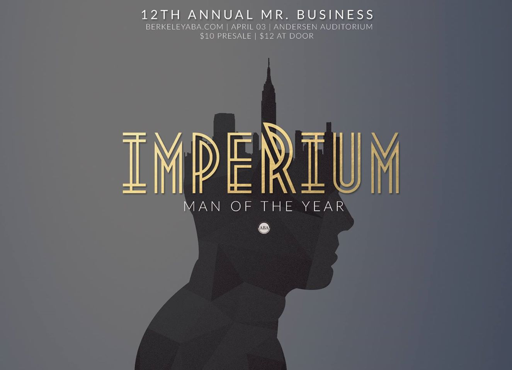

Mister Business
Mister Business is an annual charity event hosted by UC Berkeley's ABA bringing together representatives from 8 businesss organizations to compete for the crown of Mister Business. I was approached to do the graphic collatarel by the host. We brainstormed the idea "Man of the Year" based on its association with GQ and an urge to break away with past Mister Business themes which usually revolved around more primal characteristics of 'men' (not to be heteronormative). Previous themes include: Invictus, League of Extraordinary Gentleman.
'Man of the Year' emphasizes the modernity and a step away from tradition to celebrate the 11th annual Mr. Business event.